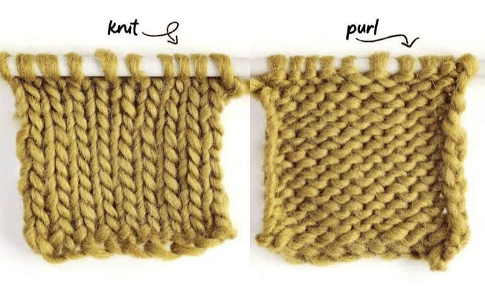

Different Types of Stitches

Foundational Stitches
These are the building blocks of all knitting. Learning these allows you to read and understand any pattern.
- Knit Stitch: The absolute foundation of knitting, where the yarn is pulled from back to front through a loop.
- Purl Stitch: The exact mirror image of the knit stitch, where the yarn is worked from the front to the back.